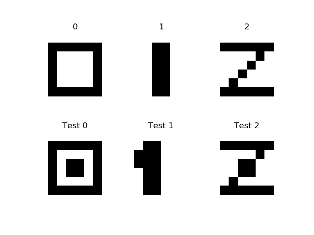

Using SVM for image recognition.
Keywords: Support vector machines, image recognition.
How to separate samples if they can not be separated by a hyperplane (point in 1D, line in 2D, plane in 3D, etc.)? See MIT6_034F10_tutor05.pdf page 8 in MIT-AI2010F how to separate 2D points where class 1 more far from origin than class 2, that is any point is also a vector from origin, so their lengths (magnitudes) are separable. So instead of given vectors 2D, you should use vectors in 1D - their lengths. Decision equation in 2D is circle: \begin{align} x1^2 + x2^2 + b < 0 \mbox{ for class 1} \end{align} \begin{align} x1^2 + x2^2 + b \geq 0 \mbox{ for class 2} \end{align} But in transformed 1D the decision equation is SVM's: \(\Phi(\overrightarrow{X}) \cdot \overrightarrow{W} + b < 0 \mbox{ for class 1}\). And so does for any dimension where samples can be separated by radius, i.e. a sphere in 3D - just center samples (if origin is not in the center) and use their magnitudes (1D radiuses).
But what about images, e.g. letters? Black pixels - class 2, white - class 1, how to make them separable by hyperplane? If you just add a new dimension different from classes, e.g. x3 = 2 for class 1 and x3 = 4 for class 2, then it will be separable visibly, but not separable by SVM method. In opposite to previous example (separable by non-linear function - circle), any letter has extremely complex non-linear separating function - its contour. Is it possible to transform letter's images to get it linearly separable by only hyperplane? It seems impossible. But SVM become famous because of the best hand-written letters recognition.
It seems that LIBSVM is the best SVM library. This is C library. To compile it from source you should have GCC and Make. According to their experience we should use the best choice for many cases: radial basis function (RBF) in their interpretation: \begin{align} K(\overrightarrow{X_i}, \overrightarrow{X_j}) = e^{-\gamma\|\overrightarrow{X_i} - \overrightarrow{X_j}\|^2} \mbox{, where } \gamma > 0 \end{align} You should use their Python program (grid.py) to find the best \(\gamma\). By default it is 1/[number of features] (number of features is probably number of pixels for a 2D image).
Lets try LIBSVM for recognition 3 8x8 digits (see src/python/svm/dig012.py):

Training data (the first row of digits) in LIBSVM format is:
0 1:0 2:0 3:0 4:0 5:0 6:0 7:0 8:0 9:0 10:1 11:1 12:1 13:1 14:1 15:1 16:0 17:0 18:1 19:0 20:0 21:0 22:0 23:1 24:0 25:0 26:1 27:0 28:0 29:0 30:0 31:1 32:0 33:0 34:1 35:0 36:0 37:0 38:0 39:1 40:0 41:0 42:1 43:0 44:0 45:0 46:0 47:1 48:0 49:0 50:1 51:1 52:1 53:1 54:1 55:1 56:0 57:0 58:0 59:0 60:0 61:0 62:0 63:0 64:0 1 1:0 2:0 3:0 4:0 5:0 6:0 7:0 8:0 9:0 10:0 11:0 12:1 13:1 14:0 15:0 16:0 17:0 18:0 19:0 20:1 21:1 22:0 23:0 24:0 25:0 26:0 27:0 28:1 29:1 30:0 31:0 32:0 33:0 34:0 35:0 36:1 37:1 38:0 39:0 40:0 41:0 42:0 43:0 44:1 45:1 46:0 47:0 48:0 49:0 50:0 51:0 52:1 53:1 54:0 55:0 56:0 57:0 58:0 59:0 60:0 61:0 62:0 63:0 64:0 2 1:0 2:0 3:0 4:0 5:0 6:0 7:0 8:0 9:0 10:1 11:1 12:1 13:1 14:1 15:1 16:0 17:0 18:0 19:0 20:0 21:0 22:1 23:0 24:0 25:0 26:0 27:0 28:0 29:1 30:0 31:0 32:0 33:0 34:0 35:0 36:1 37:0 38:0 39:0 40:0 41:0 42:0 43:1 44:0 45:0 46:0 47:0 48:0 49:0 50:1 51:1 52:1 53:1 54:1 55:1 56:0 57:0 58:0 59:0 60:0 61:0 62:0 63:0 64:0
This data are already scaled, so training by default ./svm-train dig3x8x8 gives the model file:
svm_type c_svc kernel_type rbf gamma 0.015625 nr_class 3 total_sv 3 rho 0 0 0 label 0 1 2 nr_sv 1 1 1 SV 1 1 1:0 2:0 3:0 4:0 5:0 6:0 7:0 8:0 9:0 10:1 11:1 12:1 13:1 14:1 15:1 16:0 17:0 18:1 19:0 20:0 21:0 22:0 23:1 24:0 25:0 26:1 27:0 28:0 29:0 30:0 31:1 32:0 33:0 34:1 35:0 36:0 37:0 38:0 39:1 40:0 41:0 42:1 43:0 44:0 45:0 46:0 47:1 48:0 49:0 50:1 51:1 52:1 53:1 54:1 55:1 56:0 57:0 58:0 59:0 60:0 61:0 62:0 63:0 64:0 -1 1 1:0 2:0 3:0 4:0 5:0 6:0 7:0 8:0 9:0 10:0 11:0 12:1 13:1 14:0 15:0 16:0 17:0 18:0 19:0 20:1 21:1 22:0 23:0 24:0 25:0 26:0 27:0 28:1 29:1 30:0 31:0 32:0 33:0 34:0 35:0 36:1 37:1 38:0 39:0 40:0 41:0 42:0 43:0 44:1 45:1 46:0 47:0 48:0 49:0 50:0 51:0 52:1 53:1 54:0 55:0 56:0 57:0 58:0 59:0 60:0 61:0 62:0 63:0 64:0 -1 -1 1:0 2:0 3:0 4:0 5:0 6:0 7:0 8:0 9:0 10:1 11:1 12:1 13:1 14:1 15:1 16:0 17:0 18:0 19:0 20:0 21:0 22:1 23:0 24:0 25:0 26:0 27:0 28:0 29:1 30:0 31:0 32:0 33:0 34:0 35:0 36:1 37:0 38:0 39:0 40:0 41:0 42:0 43:1 44:0 45:0 46:0 47:0 48:0 49:0 50:1 51:1 52:1 53:1 54:1 55:1 56:0 57:0 58:0 59:0 60:0 61:0 62:0 63:0 64:0It says that there are 3 classes and 3 support vectors for each class. You can make sure, that for 2-class sample data number of support vectors equals to number samples rows (see the author's svmguide1 example). The gamma is exactly 1/64.
Prediction for all test samples gives 100% accuracy prediction, even for shifted on 1 pixel left 1:
./svm-predict dig3x8x8-1.t dig3x8x8.model dig3x8x8-1.t.predict Accuracy = 100% (1/1) (classification)
The results really impress, despite of the digits are not hand-written. What is the trick? Maybe because of the dimension size is 64 plus transforming with RBF? And we get linearly separable by only hyperplane data.
But how to found RBF for sample from RBF for kernel? Example MIT6_034F10_tutor05.pdf page 8 in MIT-AI2010F says: \begin{align} K(\overrightarrow{U}, \overrightarrow{V}) = 2 \|\overrightarrow{U}\| \|\overrightarrow{V}\| \Rightarrow K(\overrightarrow{U}, \overrightarrow{V})=\Phi(\overrightarrow{U})\Phi(\overrightarrow{V}) \Rightarrow \Phi(\overrightarrow{X}) = \sqrt{2} \|\overrightarrow{X}\| \end{align} i.e. how to decompose the RBF kernel into a dot product of samples RBF?
But kernel is actually dot-product of two vectors, i.e. maybe decision equation is: \begin{align} K(\overrightarrow{X}, \overrightarrow{W}) + b < 0 \mbox{ for class 1} \end{align}
But how to find b by rotating coefficient vector W, i.e. in the same way as in the first article? That is heck if: \begin{align} b = -K(\overrightarrow{X}, \overrightarrow{W}) \end{align} For decision points in the example X4cl1(2,2) and X5cl2(-3,-3): bH4=-2*sqrt(8)*1=-5.656854249, bH5=-2*sqrt(18)=-8.485281374. That is (b = bH2 - (bH2-bH1)/2) -> b=-8.485281374 - (-8.485281374+5.656854249)/2= -8.485281374 + 2.828427125/2 = -7.071067811. That is, it's different from -5 in the example.
Lets try classification for this MIT example with b=-7.071067811 and W={0, 1}, so for X(-2,-2) -> 2*sqrt(8)*1 - 7.071067811 = -1.414213562, i.e. class 1, and for X(-2,-3) -> 2*sqrt(13)*1 - 7.071067811 = 0.14003474, i.e. class 2. That is it works.
See svm/tst2.py that tests that.
That means that we can find separating hyperplane (W and b) by rotating W with using any kernel without knowing "what is transformed data? And what is dimension size of transformed space?". Here rotating W in 64D in growing margin direction seems to be feasible.
References:
- C.-W. Hsu, C.-C. Chang, and C.-J. Lin. A practical guide to support vector classifica- tion. Technical report, Department of Computer Science, National Taiwan Univer- sity, 2003.
- MIT 6.034 Fall 2010 Artificial Intelligence by Prof. Patrick Henry Winston, Lecture 16: Learning: Support Vector Machines.